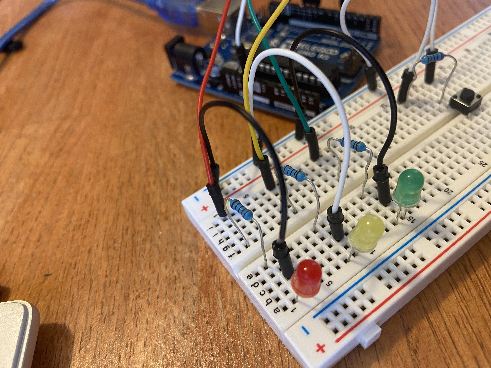

Sydney's Assignment 3 - Input Output!
For this assignment, I used input given to a photoresistor in a voltage divider to change 2 LED brightness levels.



For the voltage divider, I created a circuit from power through a 10KΩ resistor and photoresistor to ground, with an analogRead at pin A0 in between the resistors.
For each LED, I created a circuit from analog pins 9-10 through 220Ω resistors, green and yellow LEDs, and to ground.

A schematic of the circuit is shown above.
The voltage divider allows you to calculate how a variable resistor is changing based on variable voltage readings from between the resistors. The calculation is shown below.
V-out = V-in * R2/(R1+R2)
You can solve for R2 (our variable resistor) using R2 = (V-out * R1)/(V-in - V-out) where V-in is always 5V, V-out is our reading (converted from 0-1023 to 0-5), and R1 is 10KΩ.
Arduino Code
// this code builds on the analogRead serial example
//It changes 2 LED brightness levels based on readings from a voltage divider connected to a photoresistor
//max and min to calibrate voltage divider
int max = 0;
int min = 1023;
// the setup routine runs once when you press reset:
void setup() {
// set up pins 9 and 10 as OUTPUT for LEDs
pinMode(9, OUTPUT);
pinMode(10, OUTPUT);
// initialize serial communication at 9600 bits per second:
Serial.begin(9600);
//setup min/max values for the voltage resistor
for (int i = 0; i < 500; i++){
//get sensor value
int sensorValue = analogRead(A0);
//reset min if sensor is low
if (sensorValue < min){
min = sensorValue;
}
//reset max if sensor is high
else if (sensorValue > max){
max = sensorValue;
}
//delay 10 * 500 millisecond (5 seconds total to set up)
delay(10);
}
}
// the loop routine runs over and over again forever:
void loop() {
// get voltage divider reading constrained between min-max
int reading = constrain(analogRead(A0), min, max);
// print analogRead voltage reading
Serial.print("Analog read-in = ");
Serial.println(reading);
//calculate and print variable resistance of the photoresistor
// convert reading to 0-5 volt
double volt = reading * 5.0/1023.0;
Serial.print("Photoresistor resistance = ");
// use R2 = (V-out * R1)/(V-in - V-out) to calculate
Serial.println((volt * 10000.0)/(5.0 - volt));
//map reading to LED brightness
//for LED at 9, make it brighter when reading is higher (when resistance is decreasing due to brightness)
// map from 0-255
int ledLevel1 = map(reading, min, max, 0 , 255);
analogWrite(9, ledLevel1);
//for LED at 10, make it brighter when reading is lower (when resistance is increasing due to dimness)
// map from 255-0 (opposite previous light mapping)
int ledLevel2 = map(reading, min, max, 255, 0);
analogWrite(10, ledLevel2);
}
The function of the circuit and code is shown in the following GIF.